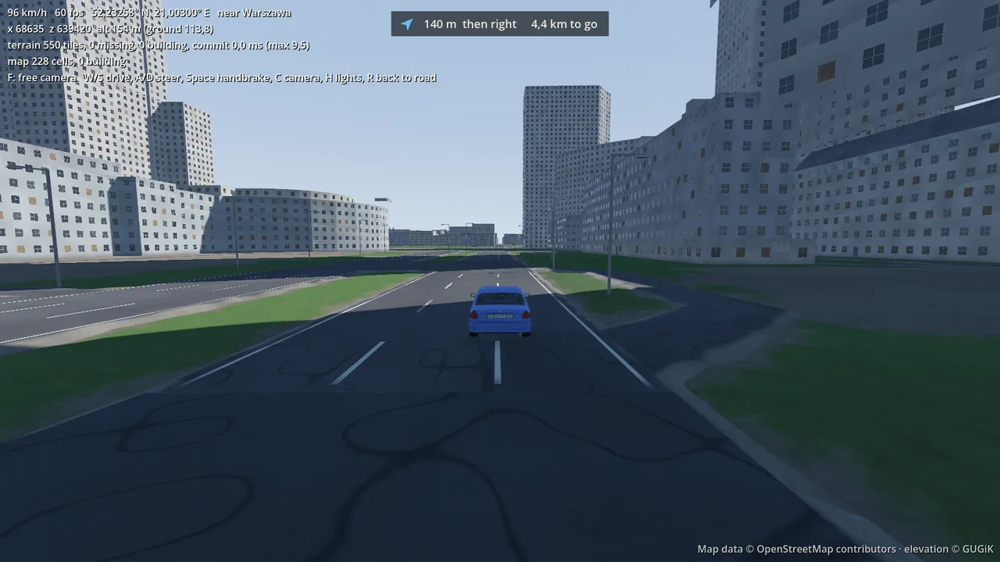
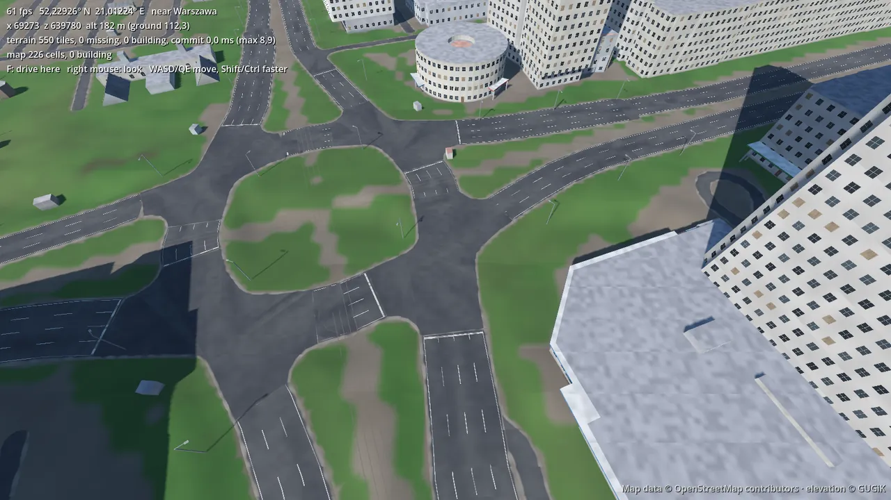
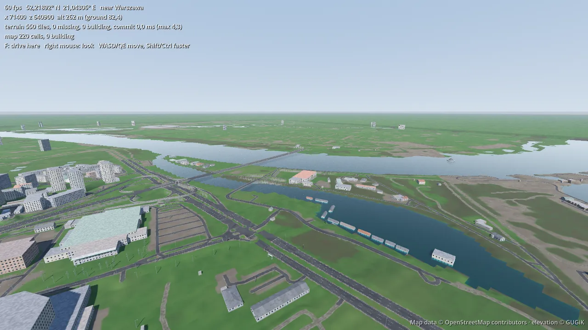
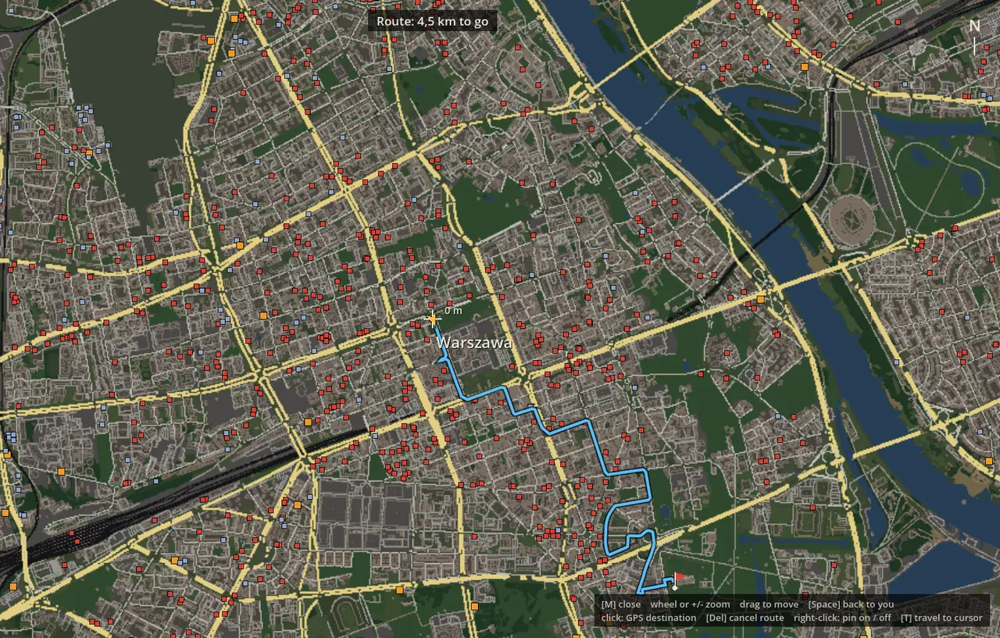
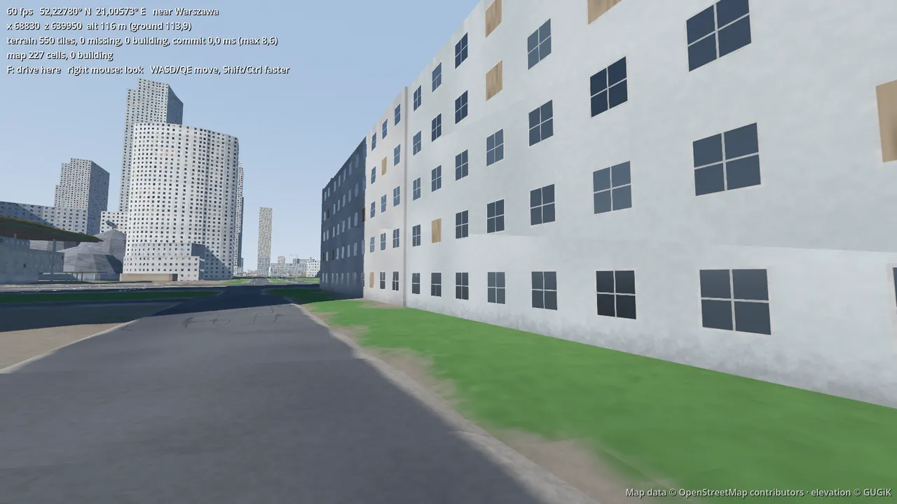
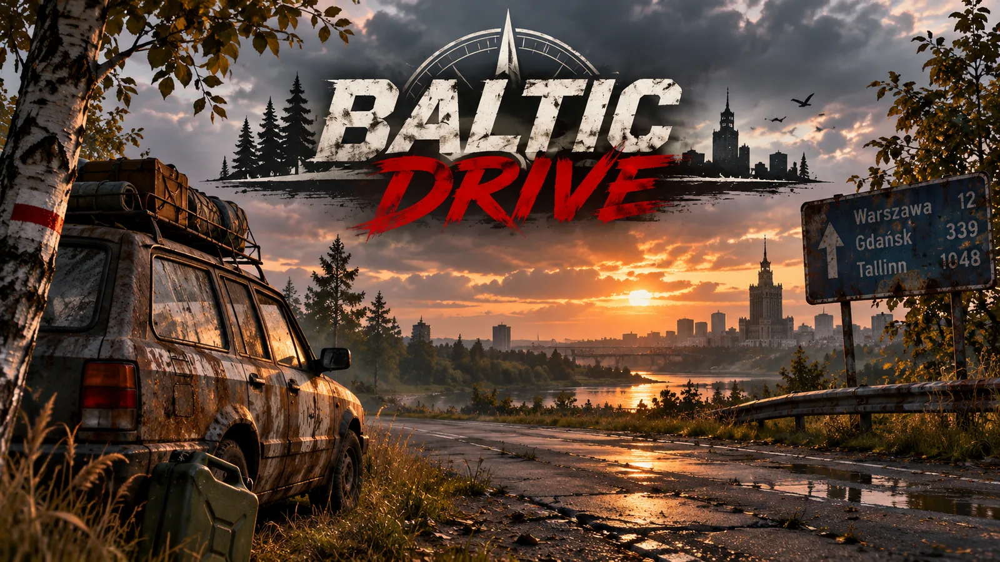
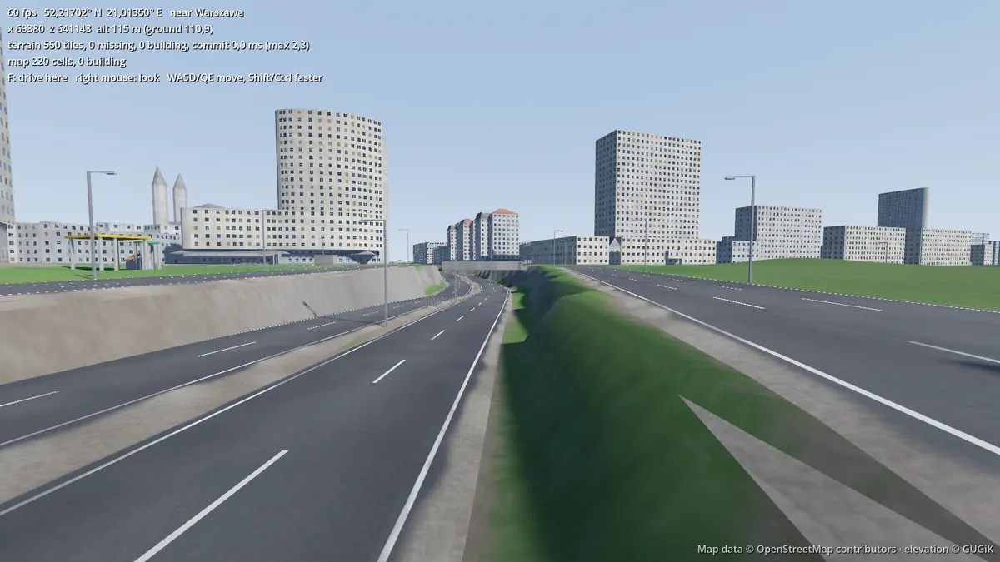

We're building a drivable copy of the real Baltic out of OpenStreetMap and government elevation data:
Poland, Lithuania, Latvia, Estonia, Finland, Sweden, Norway and Denmark. Every road. Every wiadukt.
Starting with Mazowsze.
a pre-alpha that is surprisingly awesome. — Tom
11,482map tiles of Mazowsze
2,601,381buildings, every one from OSM
561,875roads and railways
104,961junctions, each with its own kerbs
225 GBof elevation downloaded, 2.5 GB kept
6,950bridges (and 2 fake buildings, now gone)
0.5 sto route Warsaw → Radom (104.7 km)
1car that rolled over at 60 km/h
KM0
Two projects walk into a bar
12 November 2026
Baltic Drive is what happens when you take two unfinished games and staple them together.
Dead Miles, a road-survival experiment, had grown an importer that turns OpenStreetMap into
real-scale roads and buildings. All of Mazowsze, the Palace of Culture included. Thornwake, a
survival-crafting world, had the streaming engine: terrain that loads in rings around you out to
20 km, and a moving origin so the numbers never get blurry far from home.
The goal: drive from Warsaw to family in Sweden and friends in Denmark and Estonia. On real roads,
in a real car, with real ferries. And maybe, later, with zombies and seven friends.

96 km/h through Śródmieście. The GPS knows where it's going. The car mostly does too.
KM1
Bending the Earth (by only 1%)
12 November 2026
The Earth is round and a game world is flat, so you have to squash it. The usual trick projects each
small region on its own, which works until you drive across the border into Lithuania.
We picked a single Lambert conformal conic for the whole loop, with standard parallels at 53° and 67°
north. Distances stay true to within about 1% from the Tatras to North Cape. Speedometers don't lie,
and roads don't break at borders. Positions are kept in double precision, and the world quietly
recentres itself every couple of kilometres so the car never notices it's 700 km from the map's
middle.
world 0,0 is 58° N 20° E, in the Baltic Sea
Warsaw sits at x 68,891, z 639,498
Pripyat would fit too. Just saying.
KM2
Every roof was black
12 November 2026
First run on a real GPU, and every roof in Poland was pitch black. Flat ones, tiled ones, the lot.
The building shader works out window spacing for every face, roofs included. A roof has no wall
length and no wall height, so it calculated 0 ÷ 0. That gives NaN, which survives every
"mix the wall colour with the roof colour" step and comes out as black. Dead Miles had only ever been
tested on a software renderer, which forgave it. The fix was two max(…, 0.01)s.
two characters of code, two and a half million roofs fixed.
KM3
The phantom wiadukt
12 November 2026
Tom lives in Warsaw, which turns out to be the best QA there is. He drove past Warszawa Ochota and
found two long concrete buildings parked on top of Aleje Jerozolimskie, where nothing like that exists.
He sent a Google Maps screenshot with the "buildings" circled in red, the viaducts in blue and the
streets underneath in yellow. That settled it. Someone had mapped the viaduct's own concrete body in 3D,
as building parts tagged man_made=bridge. Our importer had faithfully stood them on the
road as 5-metre boxes.
Bridges are now left to the road data, and underground buildings stay underground.
"In real life, there is no hole like that. It's pretty much flat terrain there."
Tom, near Dworzec Centralny, discovering the next problem
KM4
Junctions are hard. Very hard.
12 November 2026
In the first build every junction was just roads overlapping each other with rounded ends, like
spaghetti dropped on a plate. Now each junction is one surface.
find the nodes where 3+ roads meet
group the close ones (a dual-carriageway crossing is 4 nodes)
trim each road where it clears its neighbours
grow by r, shrink by r: kerbs
That last step is the trick. Grow the shape outwards by a corner radius, then shrink it back by the
same amount, and every inside corner fills with a neat arc while the outside corners stay sharp.
Roads end at the edge with a stop line, and the sat-nav learned to hop across junction surfaces.

Rondo Dmowskiego, now in one piece.
KM5
Downloading Poland, one sheet at a time
12 November 2026: finished just after midnight
Why was there a pit next to Dworzec Centralny? Because over half of Mazowsze had no elevation at all.
Poland's survey office (GUGiK) serves its terrain model through a web service, but only the older
surveys. Newer sheets, central Warsaw among them, are separate downloads. We had filled 21,500 km²
of holes by copying nearby heights, which produces exactly the pits, steps and phantom ramps Tom kept
driving into.
So the importer now asks GUGiK's sheet index about every hole, downloads each survey sheet
(plain-text grids, about 36 MB a piece, 1 m resolution), shrinks it into the game's 10 m grid and
throws the original away. That came to 6,290 sheets and 225 GB of traffic in 2 hours 54 minutes, all
to keep 2.5 GB on disk. Missing terrain went from 13,076 km² down to 4,607 km², mostly at the far
edges of the map.
"It feels like we are downloading the whole world on my hard drive. I think I can hear it crying."
Tom
It started at 6 MB/s. The bottleneck turned out to be the script, not the internet: Python threads
politely queuing to parse text. After moving to eight worker processes and switching the PC from
2.4 GHz to 5 GHz Wi-Fi, it runs at about 19 MB/s.

The Vistula and the Port Praski basin. Water levels come straight from the terrain model.
KM6
The map screen, and where we're going
12 November 2026
Press M and you get a road atlas drawn from the same tiles the world is built from. Click anywhere
and the sat-nav plans a route; press T to teleport while testing. Warsaw to Radom takes half a second
to work out.

4.5 km across Śródmieście. Orange squares are fuel stations.
Next: rebuild Mazowsze on real elevation everywhere, then the slope between a ramp and the road next to
it, far-away roads, forests, and Thornwake's sky. After that, the next voivodeship, the next country,
and ferries.
The long dream is a survival game on simplified real terrain, for up to eight friends. Project
Zomboid's Kentucky is flat as a table and still endlessly fun. Here, at least, you could loot your own
street.

Street level. Somebody's flat is in there.
KM7
Noor painted us a title screen
13 November 2026, past midnight
While the computers argued with GUGiK's servers, Noor did the important part: she made the game look
like a game. A rusty estate car loaded for a long trip, a birch tree, a jerrycan, Warsaw at sunset
across the Vistula, and a road sign that sums up the whole plan.

Concept art by Noor. Tallinn: 1048 km. We'll get there.
Meanwhile the elevation download finished. With real heights for most of the region, the whole map
is being rebuilt from scratch, which took Tom's PC down with it for a while. Eight Python processes
working through 11,482 tiles, 104,961 junctions and 2.6 million buildings will do that.
"Oh, so we're still processing something. That's why my PC is lagging so bad. I approve."
Tom, waking up from a well-deserved nap
6,290 sheets
225 GB in, 2.5 GB kept
8 worker processes
1 hard drive, slightly traumatised
Next stop: driving past Dworzec Centralny to see if the pit is finally gone.
And on the list of future bosses: Wrocław. Over a hundred bridges, the Oder split into channels
and islands, and streets that cross water three times in a kilometre. If the importer survives Wrocław, it
survives Stockholm and Copenhagen too.
"Wrocław will break everything."
Tom, correctly
KM8
The night shift
13 November 2026, 2–4 am
Tom kept driving and kept finding things, then went to bed and left the PC on. Here's what changed overnight.
Bridges come down properly. A bridge used to stay 6 m up for its whole length, even when the thing it
crossed was only at one end. The road after a long viaduct then stayed raised too, as a wall next to the street
beside it. That's where the car kept getting stuck near Dworzec Centralny. Decks now only stay high over what
they cross and slope down from there.
Tunnels go under things. Trasa Łazienkowska dives under Al. Niepodległości, Marszałkowska and Plac na
Rozdrożu, and the game used to build all of that at street level. Now an underpass sinks 6.5 m, the ground
follows it down into a cutting, and the street above crosses on a short deck. Mazowsze has 157 of them.

Trasa Łazienkowska, finally below Marszałkowska.
Wider streets. Ordinary streets were 5.5 m wide, which is true to life but felt tight without pavements
around them. They're 6.5 m now, and other small roads got a bit wider too. Buildings also stopped floating
at medium distance.
157 underpasses
476 short decks
42,000 km of streets widened
3 full rebuilds while Tom slept
And the test car finally arrived: 8.5 km across Warsaw, from Śródmieście to Mokotów, with no hand
on the wheel. It got stuck twice on tight corners, backed off and tried again, like the rest of us.